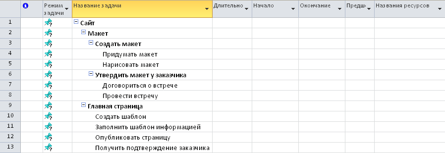

Управление ИТ-проектом • Глава 6
Планируем содержание: ИСР449391
Самая важная часть планирования. Если работы нет в Иерархической Структуре Работ (ИСР671555) — она не входит в проект и за неё не заплатят.
Правило 100%: ИСР890716 должна содержать 100% работ проекта. Ничего лишнего, но и ничего не пропущено.
1. Что такое ИСР1115883 (WBS1233943)?
Это графическое представление декомпозиции проекта. Мы разбиваем большую задачу на мелкие «пакеты работ», которые можно оценить по времени и деньгам.

Рис. 6.1. Пример классической древовидной декомпозиции из оригинального PDF.
2. Правила декомпозиции
Правило 8/80
Нижний уровень (пакет работ) не должен быть короче 8 часов и длиннее 80 часов трудозатрат.
3. Словарь ИСР25112104
| ID | Название | Результат | Критерий приемки |
|---|---|---|---|
| 1.1 | Дизайн-макет | Figma-файл | Подпись Заказчика29882522 и Спонсора31232593. |
| 1.2 | Верстка Shell | HTML/CSS код | Прохождение тестов производительности. |
Помните: ИСР36523059 — это дерево РЕЗУЛЬТАТОВ, а не дерево действий. Используйте существительные, а не глаголы.